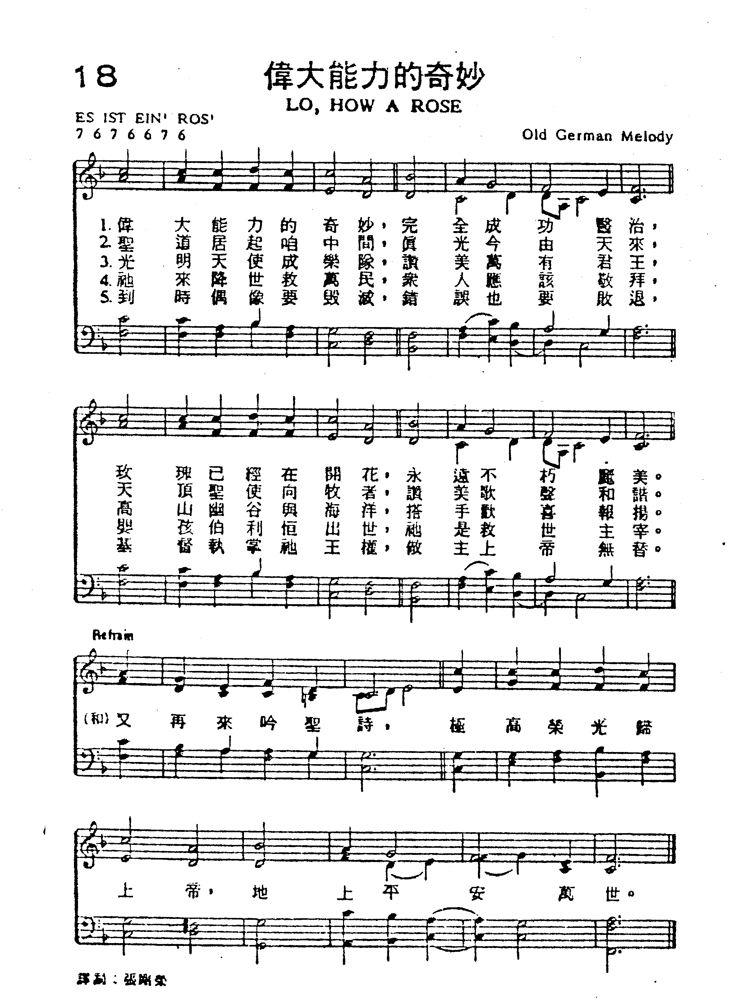

0079 0129 Lo, How a Rose E’er Blooming
_Germn 16C. 耶西之條歌 ▲ ES IST EIN’ ROS’
| 簡介
Lo, How a
Rose E’er Blooming |
| Although the early copies of this
15th-century German text include many more stanzas than are printed
here, this simpler, shorter form has much to commend it. This early
17th-century harmonization of the traditional chorale melody invites and
rewards singing in parts. |
|
|
【耶西之條歌】
詩集：普天頌讚，94
曲：German melody 編：Michael Praetorius, 1571-1621 中譯：劉治平、黃永熙
|
|
1 Lo, how a Rose e'er blooming
From tender stem hath sprung!
Of Jesse's lineage coming
As men of old have sung.
It came, a flower bright,
Amid the cold of winter
When half-gone was the night.
2 Isaiah 'twas foretold it,
The Rose I have in mind:
With Mary we behold it,
The virgin mother kind.
To show God's love aright
She bore to men a Savior
When half-gone was the night.
3 This Flower, whose fragrance tender
With sweetness fills the air,
Dispels with glorious splendor
The darkness everywhere.
True man, yet very God,
From sin and death He saves us
And lightens every load
Baptist Hymnal 2008
|
看，玫瑰花開茂盛，耶西之條發長，
柔枝已欣欣向榮；古人早已歌唱。
正當寒冬時節，夜闌人靜寂寥中，
燦爛榮光照徹。
先知早已有預言，玫瑰我心所稱，
與馬利亞同出現，童女聖母所生。
顯示上主愛護，夜闌人靜寂寥中，
為人類生救主。 |


https://hymnary.org/hymn/WAR2003/page/205 |
| |
|
http://www.sekiong.net/Music/SS/NH18.htm
聖誕歌曲的發展已經有一千五百年的歷史，在歌詞方面現存最早的聖誕歌在四、五世紀已經形成，二十世紀的今天仍然被吟唱約有：Sedulius 的自東至西(A
Solis Ortus Cardine)；Clemens Prudentius(348-Ca.413)的世間萬物未有彼時(Corde Natus ex
Parentis，聖詩90首)，大約五世紀盛行於巴勒斯坦的世間眾人攏著安靜 (Sigesats Pasa Sarx Bro teia)，以及St.
Anatolius (Ca. 400-458)的 Spelaio Parokesas (In a Cavern Oxen-trod) 及St.
Ambrose (340-397 )的聖靈臨格歌 (Veni、Redemptor Gentium，普天頌59首)等。
至於現在通行的聖誕歌曲一直到十二、三世紀才傳於世，最早的有
請來!請來!以馬內利(Veni, Emmanuel，聖詩143首)，
溫純馬利置嬰仔(Tempus Adest Floridum，聖詩388首)及
世間萬物未有彼時)聖詩90首)，
和國王進行曲 (La Marche des Rois)，即法國作曲家比才 (Georges Bizet,
1838-1875)在阿萊城姑娘組曲中的進行曲等幾首。
但不論在數量及質量方面都不及十五世紀，及十六世紀優秀，因此史稱十五、十六世紀為聖誕歌的黃金時代 (The golden age of the
Christmas carol)。
偉大能力的奇妙
|
Lo, how a
rose e'er blooming
|
Es ist ein Ros
|
偉大能力的奇妙
|
From tender stem hath sprung!
Of Jesse's lineage coming,
As men of old have sung.
It came, a flow'ret bright,
Amid the cold of winter,
When half-spent was the night.
Isaiah 'twas foretold it,
The rose I have in mind,
With Mary we behold it.
The Virgin mother kind.
To show God's love aright
She bore to them a Savior,
When half-spent was the night. |
Es ist ein Ros' entsprungen
Aus einer Wurzel zart.
Wie uns die Alten sungen,
Aus Jesse kam die Art
Und hat ein Bluemlein bracht,
Mitten im kalten Winter,
Wohl zu der halben Nacht.
Das Roeslein das ich meine,
Davon Jesaias sagt:
Maria ist's, die Reine,
Die uns das Bluemlein bracht:
Aus Gottes ewigem Rat
Hat sie ein Kindlein g'boren
Bleibend ein reine Magd.
|
|
這首聖誕歌便是在這個黃金時期產生的，司徒威爾（William E. Studwell) 說它是15世紀最為人所喜愛的德國聖誕歌曲，他的特性有：
1. 是民歌，特別顥出德國之生動個性。
2. 充滿宗教性。
3. 用方言寫成的，並有現代語法及比喻用法。
那個時代將馬利亞比喻成盛開的花朵的聖誕歌有很多，如：英國的There is No Rose of Such Virtue荷蘭民歌：Jesus
Bloemhof，及德國：Es stot ein Lind in Himmelrich 等，其中以這首 Es ist ein Ros
entsprungen （法文為Flos de Radice Jesse) 最為成功。
歌調與曲調都是十五世紀德國民間的產物。曲調為 Es ist ein Ros。它之所以成名，除了有優美的旋律外，經過名音樂家配予和聱也有很大的關係。雖然它在十五世紀流行，卻一直沒出版，1609年，德國音樂家普雷托流士（Michael
Praetorius, 1571-1621)，在他的聖詩集 Musae Sioniae裡首次收錄了這首聖誕音樂，並賦予合聲。
普雷托流士是早期德國音樂家，曾和舒茲 (Heinrich Schuetz, 1585-1671)到義大利讀書，受教於加布里利埃(Giovannu
Gabrieli, 1557-1612)
學成後，共同為德國的音樂奠基。作品除了聖詩、外尚有經文歌，牧歌以及管絃樂、舞曲、管風琴曲，此外並有理論之作品傳世，並介紹巴洛克的樂器，是巴洛克史之珍貴資料，他的作品由有名的音樂學者布倫
(Friedrich Blume) 主編共21冊，在1928-1941年間印行。
除了普雷托流士外，另一位有貢獻的音樂家是布拉姆斯 (Johannes Brahms，1833-1897)，他在1896年作11首管風琴前奏曲，op.
122 的第八首即用這首，此後這首曲子便大為流行。
Lo, How a Rose E'er Blooming, 英文譯本有十二種，其中以貝克 (Theodore Baker, 1851-1934)
的英譯版最為流行，貝克還譯有多種聖誕歌，他最有名的作品當屬他編輯的貝克音樂家辭典 （Baker' s Biographical Dictionary
of Musicians, 1900, 1985年第七版之後由 Slonimsky 主編）。新聖詩中的 Lo, How a Rose
和英國衛理公會之聖詩 Hymns and Psalms 同，是由尼爾 (John Mason Neale, 1818-1866) 翻譯的。
http://www.congsing.org/lo_how_a_rose.html
Anon. German Hymn, c. 1500, trans. by T. Baker, H. Spaeth, and J. Mattes
Addressed to one another, then to Christ
|
Lo, how a rose e’er blooming |
Song 2:1 |
|
from tender stem hath sprung, |
Is. 11:1 |
|
of Jesse’s lineage coming, |
1 Sam. 16:1; 2 Sam. 7:12; Matt. 1:5 |
|
as men of old have sung. |
Jer. 23:5; Rom. 1:1–3 |
|
It came a flow’ret bright, |
Is. 4:2 |
|
amid the cold of winter, |
|
|
when half-spent was the night. |
Is. 60:2; Luke 2:8; Rom. 13:12; Gal. 4:4 |
|
|
|
|
Isaiah ’twas foretold it, |
Is. 11:1 |
|
the rose I have in mind; |
|
|
with Mary we behold it, |
Luke 2:19 |
|
the virgin mother kind. |
Is. 7:14; Matt. 1:23 |
|
To show God’s love aright |
1 John 4:9–10 |
|
she bore to men a Savior, |
Luke 2:11 |
|
when half-spent was the night. |
|
|
|
|
|
The shepherds heard the story, |
Luke 2:10 |
|
proclaimed by angels bright, |
Luke 2:9 |
|
how Christ, the Lord of glory, |
James 2:1 |
|
was born on earth this night. |
|
|
To Bethlehem they sped |
Luke 2:15–16 |
|
and in the manger found him, |
|
|
as angel heralds said. |
|
|
|
|
|
This flow’r, whose fragrance tender |
|
|
with sweetness fills the air, |
Ex. 29:18; 2 Cor. 2:15 |
|
dispels with glorious splendor |
|
|
the darkness ev’rywhere. |
John 1:5 |
|
True man, yet very God; |
John 1:14; Phil. 2:6; Gal. 4:4 |
|
from sin and death he saves us |
Matt. 1:21; Rom. 8:2; 1 Cor. 15:56–57 |
|
and lightens ev’ry load. |
Matt. 11:30 |
|
|
|
|
O Savior, child of Mary, |
Matt. 1:16 |
|
who felt our human woe; |
Heb. 4:15; 1 Pet. 4:1 |
|
O Savior, King of glory, |
Ps. 24:10 |
|
who dost our weakness know, |
Heb. 2:14 |
|
bring us at length, we pray, |
John 14:2–3; 2 Tim. 4:18 |
|
to the bright courts of heaven |
|
|
and to the endless day. |
Rev. 21:25 |
At certain points in church history, Solomon’s image of the Rose of Sharon
has been taken as an allegorical representation of Christ. Many of our
readers, and all Reformed ones, will find themselves compelled to reject this
interpretation of that image. Among them, however, there may be some who think
the interpretation, like other medieval allegory, may make bad hermeneutics
but good homiletics. When botanical scholarship discovered that the “rose” of
Song of Songs was almost certainly a “crocus,” some Christians received the
news as a delightful curiosity while others felt the wind had been knocked out
of their chest. The second group knows that, whatever greater good has been
gained in the discovery, it does not come without a loss. Whether biblical,
historical, or not, the use of the rose as a metaphor for Christ is coherent,
and in the hymn printed above it affords many biblical ideas to dwell richly
in us that would otherwise have been unavailable, had we no comparison out of
which to build the hymn.
The hymn’s first three stanzas are an accessible and poetic retelling
of some of the details from Luke 2. The idea that Christ is a shoot from the
stem of Jesse is a
biblical image and can we blame the poet for imagining the plant as a
rosebush rather than a crab-apple tree? While the poet was probably thinking
of Isaiah 35 at the onset of stanza 2, the Stem-of-Jesse image is also
from that same prophet. This ties the first and second stanzas together in
their opening. As the stanzas end with the same phrase, they become—after the
parallelism of Hebrew poetry—amplifications of one another. They make an
idea-rhyme.
The repetition of “when half-spent was the night” draws our attention to the
timing of Christ’s birth. He was literally born at night. (The shepherds
keeping watch over their flock by night “went with haste” to see the Savior
who was “born this day”—that is, after sundown, in the Jewish definition of
“day.”) Tradition puts his birth in winter. More important, however, is what
this figure represents. These were the darkest hours of postdiluvian history.
The universal and accumulated experience of many ages had demonstrated the
hopelessness of humanity apart from the gospel. The cultural accomplishments
of Greece and Rome could do nothing to ameliorate the spiritual death that
prevailed everywhere. Even in Israel, the one nation where the promises of the
Messiah were generally known, things had never looked bleaker: God had not
spoken through a new prophet for centuries; Jerusalem was occupied by pagan
Rome and ruled by (of all people) an Idumean; and the blind pride and
hypocrisy of Jewish religious leaders offered perhaps the most moving proof of
all of the degeneracy of humanity. That the Son of God should come to shed his
blood for us then would
seem—if the “men of old” had not sung otherwise—as improbable as if a rose
bush (let’s make it a red one) should bloom in the middle of one of the
longest nights of the year, in the dead of winter. But it is precisely at
midnight, and at the solstice, that the terrestrial journey to light and life
begins. The sun always shines, even when away from human eyes, and this rose,
we discover, is ever-blooming (first line of the poem) in the courts of
endless day (last line of the poem).
The third stanza directly paraphrases the narrative of Luke’s gospel
and therefore departs from the rose image. The fourth stanza then returns to
the rose image, or rather, not the image but the fragrance that it evokes. To
have Christ emit a sweet fragrance is also a
thoroughly biblical image, for he is the Lamb of God who takes away the sins
of the world. Anyone familiar with Hebrew animal sacrifice will know that of
old God delighted in the smell of the burnt offering as much as the sight of
it. The sickly scent of scorched wool mixes with the warm esters of crackling
fat and succulent meat producing something that is repeatedly described by God
throughout the Old Testament as “pleasing.” But now Christ himself produces
the pleasing aroma in place of lambs and bulls. In a synaesthetic gesture, it
is the smell of
the rose that, with glorious splendor, dispels the darkness. Though the
connection of this smell to Christ’s offering is not directly stated here, it
is certainly indirectly implied. For the God-man saves us from sin and death
and lightens our load only because he offered himself up as a sacrifice to
replace our stench with a pleasing aroma in the nostrils of God.
Following Christ’s own rhetorical method—of allegory leading to direct
statement—the hymn’s last stanza abandons the image altogether in order to
address Christ directly. The stanza’s contents are coherent however
because of the nature of the original image. The rose, though heavenly, grows
from an earthly stem and is beheld by a virgin and shepherds here on earth. So
the last stanza’s emphasis on Christ’s humanity follows on from the image,
even though the image has been discarded.
The tune ES
IST EIN’ ROS’ ENTSPRUNGEN was
obviously written for the original German text which we sing in translation
here. The opening and repeated high Cs give it an initially uncomfortable
range.
This is all for effect, however, for the first third of the tune (setting the
first two lines of each stanza) is a gradual and stepwise descent, accented by
a syncopated rhythm
to make it trip (like the roe buck of Solomon’s song) from “sol” to “do”—an
upper neighbor-note figure on “sol” (sol–la–sol) eventually finds its answer
at the bottom of the descent in a lower neighbor-note figure on “do” (do–ti–do).
All this is repeated, following the expectations of bar
form. The tune’s final third (a setting of the last three lines of each
stanza) begins with a descent, this time much faster, from A to C. The tune
has now descended an entire octave. It then ends by presenting once again the
descending scale from “sol” to “do.” In short, the tune explores ways in which
an ever-descending melody can prepare us for, and find closure in, itself. The
melody of lines 6–7 achieves the fulfillment only promised by the nearly
identical melody in lines 1–2, because the steeper descent of the intervening
passage at line 5 prompts us to construe the original descent, when it returns
at the end, with a different semantic function. Such a study in the meaning of
melodic descent fits the incarnation ideas of the text perfectly.
https://hymnary.org/text/lo_how_a_rose_eer_blooming
This Advent and Christmas hymn expresses and acknowledges a particular tension
we ought to be aware of during the Christmas season. Just as, in the prophecies
from Isaiah, a “rose,” or stem, shoots up from the stump, so too do we celebrate
Christ’s birth in the knowledge that He brings life out of death. Our
celebrations of Christmas must always point us to Easter. We celebrate Christ’s
life because His death brings us a new kind of life. So too, the season of
Advent points us not only to Christmas, but to the second coming of Christ, when
He will finally make all things new. This is a beautiful and peaceful hymn, but
there is just a touch of melancholy in the tune. Even in the arrangement the
composer was able to convey the tension amidst our celebration, the sorrow that
must lie within our rejoicing, if only for a moment. We know what is coming that
week before Easter morning, and this should give us reason to pause. But we also
know that the tiny babe whose birth we celebrate, our “Rose,” came to
“dispel…the darkness everywhere.” Thus, even amid the tension of life out of
death, we celebrate the ultimate life we are promised in Christ.
Text:
This hymn may date back as far as the fifteenth century, though the earliest
manuscript was found in St. Alban’s Carthusian monastery in Trier and was dated
around 1580. It was first published with a whopping twenty-three stanzas in Alte
Catholische Geistliche Kirchengesange in 1599.
Originally written in German and titled “Es ist ein Ros ensprungen,” the text
combines the story of Christ’s birth with the prophecies in Isaiah about the
“rose” from the “stem of Jesse.” The second verse originally interpreted “rose”
to mean Mary, the mother of Jesus, but in 1609, Michael Praetorius changed the
interpretation to point to Christ, thus fitting with the actual Biblical
imagery. He then published the hymn with only stanzas one and two and added a
harmonization. The first two verses were translated into English by Theodore
Baker around 1894.
Most hymnals include the first two verses, and many add a third that begins,
“This flower, so small and tender.” This verse is included in The Baptist
Hymnal as seen in the above text box. Though it is included in many hymnals,
it does not appear to have come from the original text.
Tune:
Paul Westermeyer writes that the tune ES IST EIN ROS “has the unusual capacity
to lend itself equally well to both congregational and choral singing, with and
without harmony in both cases” (Let the People Sing, 138). The Psalter
Hymnal Handbook describes the harmony and rhythm as “subtle,” so it isn’t
necessary to use much, if any, accompaniment. For a quirky folk version, check
out Sufjan Steven's banjo-led recording. Of if you're more a fan of rock and
roll, Sting has a very simple rendition featured in his "Life from Durham
Cathedral" concert. There are multiple examples of a capella choral version - in
particular the Montverdi Choir's German version.
Notes
First published with the
text in the Cologne Gesangbuch of 1599 (see above), ES IST EIN
ROS is a rounded bar form tune (AABA). The tune has characteristics of a
Renaissance madrigal; it invites performance by an unaccompanied choir so
that all the fine part writing and subtle rhythms can be clearly heard. ES
IST EIN ROS is also a fine congregational tune or a children's choir anthem.
Sing in unison with delicate accompaniment. Be sure to articulate carefully
on the organ or piano those repeated melody tones.
The revised text and new
harmonization by Michael Praetorius (b. Kreutzburg, Thuringia, Germany,
1571; d. Wolfenbiittel, near Brunswick, Germany, 1621) turned "Lo, How a
Rose" into a beautiful and popular hymn. Born into a staunchly Lutheran
family, Praetorius was educated at the University of Frankfort-an-der-Oder.
In 1595 he began a long association with Duke Heinrich Julius of Brunswick,
when he was appoint¬ed court organist and later music director and
secretary. The duke resided in Wolfenbüttel, and Praetorius spent much of
his time at the court there, eventually establishing his own residence in
Wolfenbüttel as well. When the duke died, Praetorius officially retained his
position, but he spent long periods of time engaged in various musical
appointments in Dresden, Magdeburg, and Halle. Praetorius produced a
prodigious amount of music and music theory. His church music consists of
over one thousand titles, including the sixteen-volume Musae Sionae (1605-1612),
which contains Lutheran hymns in settings ranging from two voices to
multiple choirs. His Syntagma Musicum (1614-1619) is a
veritable encyclopedia of music and includes valuable information about the
musical instruments of his time.
--Psalter Hymnal
Handbook, 1987
When/Why/How:
This hymn is perfect for both Advent and Christmas, because it celebrates the
birth of Christ but also acknowledges the tension of that birth – Christ was
born to bring life out of death. As such, it is fitting for Advent when we wait
for the second coming of Christ when He will make all things new. It’s a
beautiful hymn for a Lessons and Carols service, and an especially apt selection
for a celebration of carols from around the world. If you can, I would suggest
having a choir sing the first verse in German, to express the history of the
piece, and then return to the first verse with the congregation in English.
Notes
Scripture References:
st. 1-2 = Isa. 11:1, Isa. 35:1-2, Luke 1-2, Matt. 2
st. 3 = John 1
This “Twelfth Night”
German carol from the Rhineland region combines the story of Luke 1-2 and
Matthew 2 with Isaiah's prophecies about the "rose" from the "stem of Jesse
" (Isa. 11:1; 35:1-2). Stanzas 1 and 2 are a combination of folklore ("amid
the cold of winter") and Christological interpretation of Isaiah 11:1 and
35: 1-2. Stanza 3 introduces imagery from John 1.
Originally "Es ist ein Ros
entsprungen," the carol may date back to the fifteenth century. However, the
earliest manuscript containing the text, found in St. Alban's Carthusian
monastery in Trier and preserved in the Trier munici¬pal library, is dated
around 1580. It was first published with twenty-three stanzas in Alte
catholische geistliche Kirchengesiinge (Cologne, 1599). Originally
stanza 2 interpreted the "rose" as being Mary, mother of Jesus. But in Musae
Sionae (1609) Michael Praetorius changed the interpretation to point
to Christ as the rose in accord with actual biblical imagery. In that
hymnbook Praetorius published only stanzas 1 and 2.
The English translation of
stanzas 1 and 2 in the Psalter Hymnal are by Theodore Baker (b.
New York, NY, 1851; d. Dresden, Germany, 1934) and are possibly from anthem
setting published by G. Schirmer, Inc., in 1894 when Baker was music editor
there. Baker is well known as the compiler of Baker's Biographical
Dictionary of Musicians (first ed. 1900), the first major music
reference work that included American composers. Baker studied music in
Leipzig, Germany, and wrote a dissertation on the music of the Seneca people
of New York State–one of the first studies of the music of American Indians.
From 1892 until his retirement in 1926, Baker was a literary editor and
translator for G. Schirmer, Inc., in New York City. In 1926, he returned to
Germany.
Stanza 3 is a translation
by Gracia Grindal (b. Powers Lake, ND, 1943), originally published in the Lutheran
Book of Worship (1978). Grindal was educated at Augsburg College,
Minneapolis, Minnesota; the University of Arkansas; and Luther-Northwestern
Seminary, St. Paul, Minnesota, where she has served since 1984 as a
professor of pastoral theology and communications. From 1968 to 1984 she was
a professor of English and poet-in-residence at Luther College, Decorah,
Iowa. Included in her publications are Sketches Against the Dark (1981), Scandinavian
Folksongs (1983), Lessons in Hymnwriting (1986, 1991),
and We Are One in Christ: Hymns, Paraphrases, and Translations (1996).
She was instrumental in producing the Lutheran Book of Worship (1978)
and The United Methodist Hymnal (1989).
Liturgical Use:
Advent and the Christmas season; useful as a response to the Isaiah 11
passage, especially in services of lessons and carols or "carols from many
lands."
--Psalter Hymnal
Handbook
https://www.theatlantic.com/entertainment/archive/2015/12/lo-how-a-rose-eer-blooming/421518/
By Robinson Meyer
Wikimedia DECEMBER 25, 2015 Welcome to The
12 Days of Christmas Songs: an attempt to uncover the forgotten history of
some of the most memorable festive tunes. From December 14 through 25, we’ll be
tackling one secular song and one holy song each day.
“Lo, How a Rose E’er Blooming” is an easy carol to write about, because I do not
have to convince you it is beautiful. Pull up any choral recording, slide over
to the penultimate phrase—“amid the cold of winter”—and listen hard to that last
word. Between the first and second syllable of winter, the minor chord blossoms
into major.
I mean this seriously: What else is there to say? Here is the chill of winter
transfigured into an ardent flame; here is theology as harmony. “Lo, How a Rose”
even includes an extended pastoral analogy and an allusion to the Book of
Isaiah. I’m not a Christian, but I’m at a loss as to what more you could want
from sacred music. Kazoos?
Most Christmas carols, and most of our popular music generally, exist for the
rhythm or melody. Consider how much mileage “Angels We Have Heard on High” gets
out of its cascading glorias, or how much of the fun of “Carol of the Bells”
springs from its icy intervals or insistent tempo. But “Lo, How a Rose” exists
for the chords. There is almost no rhythmic variation: The four voices move
together, syllable after syllable, in patient homophony.
This is a hymn about beholding and listening. It’s about watching revelation
flourish.
https://youtu.be/IWS7CpFHJ8E
Es ist ein Ros entsprungen, most commonly translated to English as Lo, How a
Rose E'er Blooming, is a Christmas carol of German origin.
It’s been about this since the beginning. Many Christmas tunes date back
centuries, but what’s striking about “Lo, How a Rose” is that it is old as a
coherent piece of music. However ancient it is, “Greensleeves” has changed a
lot: The lyrics used to talk about a prostitute; now they talk about Jesus. But
“Lo, How a Rose” has pretty much been the same since its inception in the early
17th century.
The tune we now know first appears in a regional hymnal in 1599 as “Es Ist ein
Ros Entsprungen.” Michael Praetorius, a court composer in central Germany, wrote
the familiar harmonization 10 years later. Such ends the meaningful musical
history of “Lo, How a Rose.” There have been a few changes to the text since
then—more German verses were added in the 19th century, and the most common
English translation was written in 1894—but essentially none to the music. Hear
the song today, in church or in a mall, and you’ll almost certainly hear the
exact chords Praetorius picked, in the order he picked them.
As it was written for choir, there’s no good solo version. Sting’s
sometimes-cited 2009 cover isn’t the exception that proves the rule here.
Rather, it’s the embarrassment—of pizzicato strings, of whispered text, of
bizarro pronunciation—that should convince all future artists not to test the
rule, ever.
Even Sufjan Stevens’s cover is less a solo version than an instrumental version
that happens to include singing. Stevens’s doubled vocal is lovely, sure, but
I’m moved more by hearing his distinct orchestration—glockenspiel, banjo,
guitar—brush its way into each chord after scintillating chord.
These versions are lovely, but they’re not exactly justifying corporeal
existence. For that, we have to turn to the Swedish composer Jan Sandström’s
more recent choral arrangement, “Det Är en Ros Utsprungen.” Every harmony has
been taken from Praetorius’s original and extended, embellished for maximum
ethereality.
I’ve heard it said that, when written music succeeds, you enter a single
life-world designed by the composer and awakened by the performers. We don’t
only enter Sandström’s version, though. He gives us time to wander around, look
at the decor, and settle into a sofa made of well-tuned vowels. If you can
ignore the screensaver-style visuals, here is a fine recording, from the Choir
of King’s College, Cambridge:
Perhaps later generations, less hung up on attention than ours, will find other
ways to ornament Praetorius’s score. Maybe their arrangements will dwell less in
meditation and more in quickly oscillating rhythm. Yet the core will remain. For
more than 400 Decembers, singers have waited on “Lo, How a Rose.” It is a text
in sound; it is a set of tones and pauses; it is a cogent path of breath and
time.
Robinson Meyer is
a staff writer at The Atlantic. He is the author of the newsletter The
Weekly Planet, and a co-founder of the COVID Tracking Project at The
Atlantic.
https://en.wikipedia.org/wiki/Es_ist_ein_Ros_entsprungen
From Wikipedia, the free encyclopedia
Jump to navigationJump
to search
|
"Es
ist ein Ros entsprungen" |

First printed in the 1599 Speyer Hymnal
|
|
Genre |
Hymn |
|
Occasion |
Christmas |
|
Text |
Unknown author |
|
Language |
German |
"Es
ist ein Ros entsprungen" (literally "It is a rose sprung
up"), is a Christmas
carol and Marian
Hymn of German origin. It is most commonly
translated in English as "Lo, how a rose e'er blooming", and
is also called "A Spotless Rose" and "Behold a Rose of
Judah". The rose in
the German text is a symbolic reference to the Virgin
Mary. The hymn makes reference to the Old
Testament prophecies of Isaiah,
which in Christian interpretation foretell the Incarnation
of Christ, and to the Tree
of Jesse, a traditional symbol of the lineage
of Jesus. Because of its prophetic theme, the hymn is popular
during the Christian
season of Advent.[1]
The hymn has its roots in an unknown
author before the 17th century. It first appeared in print in 1599
and has since been published with a varying number of verses and in
several translations. It is most commonly sung to a melody
harmonized by the German composer Michael
Praetorius in 1609.[1] The
hymn's popularity endures in the 20th and 21st centuries; it has
been recorded by such modern artists as Mannheim
Steamroller,[2] Linda
Ronstadt,[3][4] and Sting.[5][6]
Meaning[edit]
The hymn was originally written with
two verses that describe the fulfilment of the prophecy of Isaiah foretelling
the birth
of Jesus. It emphasizes the royal genealogy
of Jesus and Christian
messianic prophecies.[1] The
hymn describes a rose sprouting from the stem of the Tree of Jesse,
a symbolic device that depicts the descent of Jesus from Jesse of Bethlehem,
the father of King
David.[7] The
image was especially popular in medieval times, and it features in
many works of religious art from the period. It has its origin in
the Book of Isaiah:[1]
And there shall come forth a
rod out of the stem of Jesse, and a Branch shall grow out of his
roots.
The second verse of the hymn, written
in the first person, then explains to the listener the meaning of
this symbolism: That Mary, the mother of Jesus, is the rose that has
sprung up to bring forth the Christ child, represented as a small
flower ("das Blümlein"). The German text affirms
that Mary is a "pure maiden" ("die reine Magd"),
emphasizing the doctrine of the Virgin
birth of Jesus.[citation
needed] In Theodore Baker's 1894
English translation, on the other hand, the second verse indicates
that the rose symbolizes the infant Christ.[8]
Since the 19th century other verses
have been added, both in German and in translation.[citation
needed]
History[edit]
The poetry of Isaiah's prophecy has
featured in Christian hymns since at least the 8th century, when Cosmas
the Melodist wrote a hymn about the Virgin Mary
flowering from the Root of Jesse, "Ραβδος
εκ της ριζης", translated in 1862 by John
Mason Neale as "Rod of the Root of Jesse".[9][10]
The text of "Es
ist ein Ros entsprungen" dates from the 15th century. Its
author is unknown. Its earliest source is in a manuscript from the Carthusian Monastery
of St Alban [de] at Trier,
Germany – now preserved in the Trier
City Library [de] –
and it is thought to have been in use at the time of Martin
Luther. The hymn first appeared in print in the late 16th
century in the Speyer
Hymnbook [de] (1599).[10] The
hymn has been used by both Catholics and Protestants,
with the focus of the song being Mary or Jesus,
respectively.[11] In
addition, there have been numerous versions of the hymn, with
varying texts and lengths. In 1844, the German hymnologist Friedrich
Layriz [de] added
three more stanzas,[12][13] the
first of which, "Das
Blümelein so kleine", remained popular and has been included
in Catholic[14] and
Protestant hymnals.[15]
The tune generally used for the hymn
originally appeared in the Speyer Hymnal (printed
in Cologne in 1599), and the familiar harmonization was written by
German composer Michael
Praetorius in 1609.[11] A canon version
for four voices also exists, based on Praetorius's harmony and
sometimes attributed to his contemporary, Melchior
Vulpius.[16] The metre of
the hymn is 76.76.676.
|
|
Performed by the chorus of the U.S. Army Band, c.
2010
|
Problems playing these files? See media
help. |
In 1896, Johannes
Brahms used the hymn's tune as the base for a chorale
prelude for organ, one of his Eleven
Chorale Preludes Op. 122, later transcribed for
orchestra by Erich
Leinsdorf.[17][18][19]
During the Nazi
era, many German Christmas carols were rewritten to promote National
Socialist ideology and to excise references to the
Jewish origins of Jesus. During Christmas
in Nazi Germany, "Es
ist ein Ros entsprungen" was rewritten as "Uns
ist ein Licht erstanden/in einer dunklen Winternacht" ("A
light has arisen for us/on a dark winter night"), with a secularised
text evoking sunlight falling on the Fatherland and
extolling the virtues of motherhood.[20]
The hymn's melody has been used by a
number of composers, including Hugo
Distler who used it as the base for his 1933 oratorio Die
Weihnachtsgeschichte (The Christmas Story).[1] Arnold
Schoenberg's Weihnachtsmusik (1921)
for two violins, cello, piano and harmonium is a short fantasy on Es
ist ein Ros entsprungen with Stille
Nacht as a contrapuntal melody.[21] In
1990, Jan
Sandström wrote Es
ist ein Ros entsprungen for two a
cappella choirs, which incorporates the setting of
Praetorius in choir one.
English
translations[edit]
Well-known versions of the hymn have
been published in various English translations. Theodore
Baker's "Lo, How a Rose E'er Blooming" was written in 1894[8] and
appears in the Psalter
Hymnal (Christian
Reformed Church in North America) and The
United Methodist Hymnal (American United
Methodist Church).[22][23]
The British hymn translator Catherine
Winkworth translated the first two verses of the
hymn as "A Spotless Rose".[24] In
1919 the British composer Herbert
Howells set this text as a motet for SATB choir.[11] Howells
stated that:
I sat down and wrote A Spotless
Rose...after idly watching some shunting from the window of a
cottage in Gloucester which overlooked the Midland
Railway. In an upstairs room I looked out on iron railings
and the main Bristol
to Gloucester railway line, with shunting
trucks bumping and banging. I wrote it and dedicated to my
mother – it always moves me when I hear it, just as if it were
written by someone else.[25]
Howells' carol is through-composed,
switching between 7/8, 5/4 and 5/8 time signatures, unconventional
for a carol of this era.[26] The
plangent final cadence ("On
a cold, cold winter's night"), with its multiple suspensions is
particularly celebrated.[26] Howells'
contemporary, Patrick
Hadley reportedly told the composer "I should like,
when my time comes, to pass away with that magical cadence".[27] Winkworth's
translation was again set to music in 2002 by the British composer
and academic Sir Philip
Ledger.[28]
A further English translation of the
hymn, "Behold, a rose is growing", was written by the American
Lutheran musician and writer, Harriet Reynolds Krauth Spaeth
(1845–1925). Her four-verse version is often published with an
additional 5th verse, translated by the American theologian John
Caspar Mattes (1876–1948).[29][30]
Another Christmas hymn, "A Great and
Mighty Wonder", is set to the same tune as this carol and may
sometimes be confused with it. It is, however, a hymn by St.
Germanus, (Μέγα καὶ παράδοξον θαῦμα), translated from Greek to
English by John
M. Neale in 1862. Versions of the German lyrics
have been mixed with Neale's translation of a Greek hymn in
subsequent versions such as Percy
Dearmer's version in the 1931 Songs
of Praise collection and Carols
for Choirs (1961).[31]
|
German original |
Baker's version |
Winkworth's version[32] |
Spaeth's translation
with Mattes' 5th verse |
Es ist
ein Ros entsprungen,[n
1]
aus einer Wurzel zart,
wie uns die Alten sungen,
von Jesse kam die Art
Und hat ein Blümlein bracht
mitten im kalten Winter,
wohl zu der halben Nacht.
|
Lo, how a rose e'er
blooming,
From tender stem hath sprung.
Of Jesse's
lineage coming,
As men of old have sung;
It came, a flow'ret bright,
Amid the cold of winter,
When half spent was the night.
|
A Spotless Rose is
blowing,
Sprung from a tender root,
Of ancient seers' foreshowing,
Of Jesse promised fruit;
Its fairest bud unfolds to light
Amid the cold, cold winter,
And in the dark midnight.
|
Behold, a Branch is
growing
Of loveliest form and grace,
as prophets sung, foreknowing;
It springs from Jesse's race
And bears one little Flow'r
In midst of coldest winter,
At deepest midnight hour.
|
Das Röslein, das ich meine,[n
1]
davon Isaias sagt,
ist Maria die reine
die uns das Blümlein bracht.
Aus Gottes ew'gem Rat
hat sie ein Kind geboren
und blieb ein reine Magd.
or: Welches uns selig macht.
|
Isaiah 'twas foretold it,
The Rose I have in mind,
With Mary we
behold it,
The virgin mother kind;
To show God's love aright,
She bore to men a Savior,
When half spent was the night.
|
The Rose which I am
singing,
Whereof Isaiah said,
Is from its sweet root springing
In Mary, purest Maid;
Through God's great love and might
The Blessed Babe she bare us
In a cold, cold winter's night.
|
Isaiah hath foretold it
In words of promise sure,
And Mary's arms enfold it,
A virgin meek and pure.
Thro' God's eternal will
This Child to her is given
At midnight calm and still.
|
|
|
|
|
The shepherds heard the
story,
Proclaimed by angels bright,
How Christ, the Lord of Glory,
Was born on earth this night.
To Bethlehem they sped
And in a manger found him,
As angel heralds said.
|
Das Blümelein, so kleine,[n
2]
das duftet uns so süß,
mit seinem hellen Scheine
vertreibt's die Finsternis.
Wahr
Mensch und wahrer Gott,
hilft uns aus allem Leide,
rettet von Sünd und Tod.
|
O
Flower, whose fragrance tender
With sweetness fills the air,
Dispel with glorious splendour
The darkness everywhere;
True man, yet very God,
From Sin and death now save us,
And share our every load.
|
|
This Flow'r whose
fragrance tender
With sweetness fills the air,
Dispels with glorious splendor
The darkness ev'rywhere.
True Man, yet very God;
From sin and death He saves us
And lightens ev'ry load.
|
Lob, Ehr sei Gott dem Vater,[n
2]
dem Sohn und heilgen Geist!
Maria, Gottesmutter,
sei hoch gebenedeit!
Der in der Krippen lag,
der wendet Gottes Zoren,
wandelt die Nacht in Tag.
|
|
|
|
O Jesu, bis zum Scheiden[n
2]
aus diesem Jamerthal
Laß dein Hilf uns geleiten
hin in der Engel Saal,
In deines Vaters Reich,
da wir dich ewig loben:
o Gott, uns das verleih!
|
|
|
O Saviour, Child of Mary,
Who felt our human woe;
O Saviour, King of Glory,
Who dost our weakness know,
Bring us at length we pray,
To the bright courts of Heaven
And to the endless day.
|
In popular culture[edit]
Some performances by contemporary
popular artists include:
https://www.lsmchinese.org/lifestudy/ot/isa38.html
基督是從耶西的本所發的嫩條，從耶西的根所生的枝子。（賽十一1∼9。）這�塈滶繴�豫表為一棵被齊根砍倒的大樹樁上所發的嫩條。（參十32∼34。）每一件有關以色列和大衛家的事，那時幾乎都已經被砍倒。以賽亞十一章只題到大衛的父親耶西。所有存留的只是耶西，就是大衛的源頭而已。耶西所生的，就是大衛家，已經被砍倒，但是大衛的源頭仍然存留。當巴比倫王尼布甲尼撒來征服猶大，制伏以色列時，大衛的王室，就是大衛的家，就被砍倒了。尼布甲尼撒毀壞了聖城耶路撒冷和聖殿。他俘擄了大衛的王家，包括王和他的家人，把他們擄到巴比倫去了。這就意謂大衛王家的結束。大衛家這棵大樹被砍倒了，但樹的本和根還在。基督就是從這源頭的本所發的嫩條，從根所生的枝子。
王家被砍倒了，留下本和根在那�堙A約有六個世紀之久，從主前六○六年左右到基督出生的時候。當基督照著以賽亞七章十四節的豫言出生時，祂乃是從耶西的本所發的嫩條。沒有多少人會注意到一根嫩條。耶穌乃是從耶西的本所發的嫩條;雖然祂變得如此『微小』，但沒有任何逼迫或苦難能將祂砍倒。作為從耶西的本所發的嫩條，祂是存留到永遠的。
基督在成為肉體�埵p同嫩條的來臨，乃是大衛受剝奪之王家的復興。大衛的王家已被剝奪到一個地步，幾乎沒有剩下甚麼。但是有一天，在神成為肉體時，有一嬰孩生在大衛家。約瑟和馬利亞都是大衛的後裔。從馬利亞生出一嫩條。大衛那『被砍倒』的王家，在那嫩條出生時得了復興。
我們必須看見，大衛家的復興仍然在進行著。按照我們的想法，基督有兩次的來臨;但按照神的看法，祂只差遣祂的兒子一次而已。這個差遣是從伯利恆開始。當耶穌出生時，那乃是神差祂兒子到地上的開始。這個差遣還沒有完全的完成，仍然在進行之中。這個差遣開始於耶穌出生時，完成於人子公開的來臨到地上。馬太二十四章二十七節說，『閃電怎樣從東邊發出，直照到西邊，人子來臨也要這樣。』那纔是神差遣祂兒子的完成。神的兒子受差遣，要持續二千多年之久。
基督這從耶西的本所發的嫩條，是在二千年前出現的，但祂的受差遣還沒有完全完成。祂受神差遣的完成，乃是在三方面達成的：藉著召會的建造，藉著祂對以色列的豫備，以及藉著祂對列國的調整、審判。當前整個中東的局勢，完全是為著以色列的好處。以色列享受到最近美國和伊拉克之戰的好處;這可以看作是基督來臨前，對以色列之豫備的一部分。最近這場伊拉克戰爭，也是神對列國的調整。自從一九八七年以來，我們看見地上列國中有了極大的調整－首先是蘇俄及其衛星國家，其次是在中東國家之間。這是何等的調整！基督在近年來的世界局勢上，已經走了一大步。離祂公開的顯在地上，現在是更近了，但祂仍然在路上。
主在祂出生時來臨，然後祂去十字架上受死。門徒以為祂要離開他們;但主啟示他們，這不是祂的去，乃是祂的來。（約十四3，17∼20，二十19∼22。）主藉著死與復活的去，事實上乃是祂成為靈來到門徒那�堙A好進到他們�堶情A並住在他們�堶情C祂也在五旬節那日作為靈來臨，將祂的身體浸入一位靈�堙C（徒二4上，17。）今天祂仍然在路上。祂正在來。整個世界的局勢，乃是基督來臨步伐的指標。在伯利恆的馬槽�堙A祂是微小的嫩條，但在馬太二十四章二十七節祂作為閃電，必成為向列國所豎的旗號。
我們需要來看以賽亞十一章所啟示的。以賽亞書啟示基督是嫩條和枝子。祂滿了智慧和聰明的靈，謀略和能力的靈，知識和敬畏耶和華的靈。（2。）何等的靈！這靈乃是七倍加強的靈。（啟一4。）同著這靈有神的行政、神的政權。（賽十一3∼5。）然後有生命的復興。（6∼9。）至終嫩條成了向萬民所立的旗幟，（10，）而枝子成了向列國所豎的旗號。（12。）甚至外邦人也要來歸向基督。地的中心在那�堙H人類的中心在那�堙H世界歷史的中心在那�堙H請看這旗幟。基督這旗幟乃是中心，萬民必往祂而去。這是以賽亞十一章�堛滷狴隉C
基督作為嫩條和枝子早已經來了。一面，基督作嫩條和枝子是在諸天之上，另一面，祂是在信徒和召會�堶情C祂正在作甚麼？祂仍然在往前。祂仍然在路上。祂正在『逐步』的走向我們。祂在我們�堶情A但祂仍然逐步走向我們；這是祂來臨的奇妙真理。
祂成為肉體時是嫩條;祂復活時是長成的枝子，這枝子起初是以賽亞四章二節所啟示耶和華的苗。祂是耶和華的苗，指明祂的神性。祂是從耶西的本所發的嫩條，從耶西的根所生的枝子，這指明祂的人性。事實上，祂是一根枝子，就是兼有神性和人性的枝子。
一 從耶西的本所發的嫩條
我們已經看過，基督是從耶西的本所發的嫩條。（賽十一1上。）耶西的本，指明那受過剝奪之屬人的王族源頭。（得四17下。）從本所發的嫩條，指明在新鮮�堨糽R的復興能力。嫩條是非常青翠、柔嫩、新鮮的。
二 從耶西的根所生的枝子
基督也是從耶西的根所生的枝子。（賽十一1下。）耶西的根，指明生命隱藏加深的能力。從根所生的枝子，指明為著結果子的生長能力。嫩條是枝子的開始，枝子是為著結果子。
三 充滿耶和華的靈
當基督這嫩條和枝子在這�堮氶A靈也在這�堙C四福音給我們看見，無論耶穌在那�堙A靈就在那�堙C在四福音�埵章鈺齱A有枝子，也有靈。這靈乃是耶和華的靈，就是智慧和聰明的靈，謀略和能力的靈，知識和敬畏耶和華的靈。（賽十一2。）智慧和聰明的靈是為著心思，主要與人性有關。謀略和能力的靈指耶穌自己是奇妙的策士，藉著那靈一直給我們策略。（九6。）那靈有謀略，也有能力。
那靈也是知識和敬畏耶和華的靈。敬畏耶和華是和正確的知識相聯的。在我們得救以前，因著我們無知，我們一無所懼。從我們蒙主拯救時起，我們就一直接受屬靈的教育，而得著屬靈的知識。今天我們許多人能見證，我們不敢去電影院或其他屬世或罪惡的地方。許多地方我們不敢去，因為我們敬畏耶和華。有人或許要我們作一件事，但我們不敢作，因為我們敬畏耶和華。我們不敢買有今世摩登樣子的衣服，因為我們敬畏耶和華。我們敬畏耶和華，是由於屬靈的認識。因為這靈有七個項目－耶和華、智慧、聰明、謀略、能力、知識、以及對耶和華的敬畏－我們可以說，祂是七倍加強的靈。這七個項目說出召會的光景。所以，這指明基督這嫩條和枝子是在這�婸P我們同在。那靈就是祂的同在。
四 為著施行耶和華的行政
作為從耶西的本所發的嫩條，從耶西的根所生的枝子，基督施行了耶和華的行政。（賽十一3∼5。）耶和華的行政有兩個項目－公義和公正。基督以敬畏耶和華為樂。（3上。）祂一直以敬畏耶和華為樂，甚至當祂還是十二歲的男孩時就如此。祂行審判不憑眼見，斷是非也不憑耳聞，卻要以公義審判貧窮人，以公正判斷困苦人。（3下∼4上。）公平就是公正。基督以公平、公正、正直判斷困苦人。在人群社會�堣ㄧq的事，主要是加於窮人身上;不公正主要的是施於困苦的、受苦的人身上。世上黑暗落後的國家，對困苦的人滿了不義和不公。但每一個好的政府，都必須是公義、公正的。不然，那個政府就是黑暗的。神的行政是公義、公正的。
當基督回來時，祂要以口中的杖擊打世界，以嘴�堛漁藈�戮惡人。（4下。）祂嘴�堛漁薶N是祂口�堜狴X的話。公義必當祂的腰帶，使祂剛強，信實必當祂脅下的帶子，使祂穩固。（5。）一個政府若要強盛而有力，就必須是公義的；若要穩固，就必須是信實的。不公義的政府不能持久，不信實的政府不會穩固。神的行政是強有力並且穩固的。
五 帶進生命的復興
耶和華的行政帶進生命的復興。（賽十一6∼9。）在生命的復興時，豺狼必與綿羊羔同居，豹子必與山羊羔同臥。（6上。）豺狼撲殺羊羔，但在生命的復興時，牠們必與羊羔同居。在生命的復興時，少壯獅子必與牛犢和肥畜同群，小孩子要牽引牠們。（6下。）牛必與熊同食，牛犢必與小熊同臥，獅子必喫草與牛一樣。（7。）喫奶的孩子必玩耍在虺蛇的洞口，斷奶的嬰兒必按手在毒蛇的穴上。（8。）以賽亞十一章九節說，『在我聖山的遍處，這一切都不傷人，不毀物，因為認識耶和華的知識要充滿遍地，好像水充滿洋海一般。』這個敬畏神的知識乃是在生命的復興時，藉著耶和華的行政，從那靈而來的。
這生命的復興是在來世，但我們不該忘記希伯來六章五節，那�塈i訴我們，我們要在今世豫嘗到來世的能力。以賽亞十一章所記載來世將要發生的事，該在我們中間成為豫嘗。在我們中間不應當有『豺狼』、『豹子』、『熊』、『獅子』、或『毒蛇』。保羅在行傳二十章告訴弟兄們，要留意兇暴的豺狼進入他們中間。（29。）因為召會生活是來世的豫嘗，所有的『豺狼』、『豹子』、『熊』、『獅子』、和『毒蛇』，都應當改變性情。這就是生命的復興。在消極一面說，我們已過可能是這樣的人。有時候我們會認為某位弟兄是隻『豹子』，直到我們發現他的性情改變了。召會生活可以看作生命復興的『動物園』，其中每一個人的性情，都藉著那靈，並因基督這嫩條和枝子而有改變。
http://morrisonip.blogspot.com/2018/06/20-111-10.html
《耶和華的靈充滿, 耶西之根歌》(賽11:1-10)
http://www.equiptoserve.org/etspedia/%E8%81%96%E7%B6%93%E9%9B%A3%E9%A1%8C/%E8%B3%BD-7
從耶西的不必發一條所指是甚麼？（賽11:1）
「從耶西的本必發一條」，這一句話中的本字下有小字「原文作不」，這個不字非 不字，音墩，其意指木禿其上，而僅餘留的根株（6:13）。粵人以截木作墊爲不。
文理本聖經譯爲「耶西之根株必將萌蘖」。呂振中譯本作「從耶西的樹墩子必生 出一根枝條來」。在粵語本及客話本譯爲樹頭。但最容易使人明白的譯詞爲樹墩，
就是樹被砍伐或鋸斷所留下樹根的禿出部分，英文聖經譯爲Stump，亦即爲木頭 墩或樹樁之意。中英譯法，意音都很相近，在原文上是一個字，其他中文譯本多
譯爲樹幹（參伯14:8）。這裡所說從耶西的本或稱爲樹不（墩）所發的枝條，乃 是預言彌賽亞基督，他是從耶西的根而生，是大衛的苗裔（賽11:1，10；耶23:5），
亦即是從大衛後裔生的（羅1:3），這事早已應驗了（羅15:12；太1:1；啟5:5）。
本文選自 李道生著，《舊約聖經問題總解下》(香港：浸會出版社，1985)
https://baike.baidu.com/item/%E8%80%B6%E8%A5%BF/20415673
大卫的父亲
本 名耶西民族族群人伯利�琤X生地伯利��
人物生平
大卫和歌利亚的战斗记载在《撒母耳记》上第17章:
扫罗和以色列人犹大的梭哥迎战非利士人。歌利亚连续四十天，每天两次向以色列人讨战，进行一对一的决斗，来决定战役的胜负。扫罗和全体以色列人都极其害怕。年轻的大卫为跟随扫罗出征的三个哥哥送饭，听见歌利亚的骂阵，和扫罗允诺的重金赏赐，无所畏惧，要击败歌利亚。大卫拒绝了扫罗提供的战衣，手中拿杖和甩石的机弦，和从溪中挑选的五块光滑的石子；和歌利亚对阵，歌利亚头戴铜盔，身穿铠甲。“那非利士人就指着自己的神咒诅大卫。”
大卫回答说：“今日耶和华必将你交在我手里；我必杀你，取下你的头。我又要将腓力士军兵的尸首给空中的飞鸟、地上的野兽吃。全地就必知道以色列中有神；聚集在这里的众人也必知道耶和华施行拯救，不是用刀用枪，因为争战的胜败全在乎耶和华。他必将你们交在我们手里。
”
大卫用机弦将石子击中歌利亚的额，歌利亚就仆倒，面伏于地。大卫将歌利亚的刀从鞘中拔出来，用刀割了他的头，将他杀死。非利士人逃避以色列人的追赶，“直到迦特和以革伦”。大卫将歌利亚的军装放在他自己的帐棚里，却将他的头拿到耶路撒冷。扫罗问元帅押尼珥，是谁的儿子迎战那非利士人。押尼珥领大卫到扫罗面前，扫罗问大卫是谁的儿子，大卫说：“我是你仆人伯利�琱H耶西的儿子”。